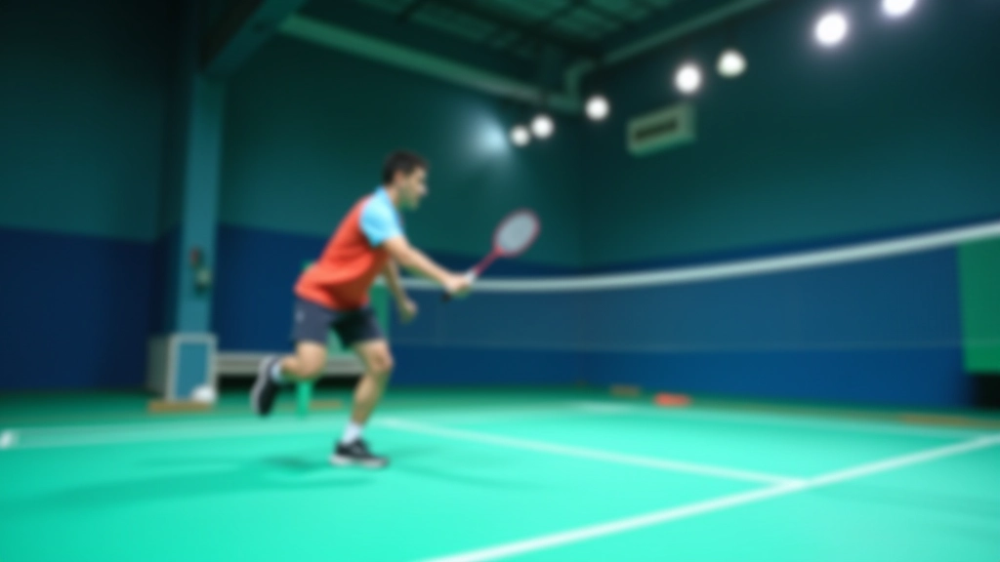
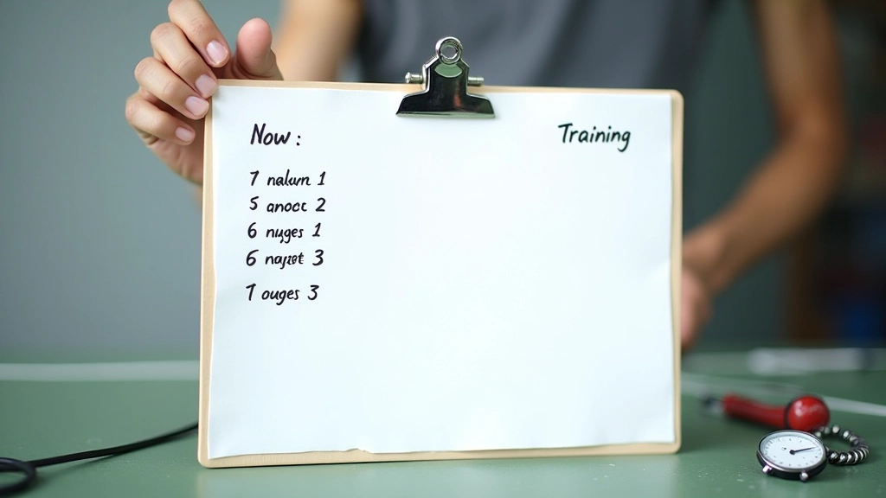
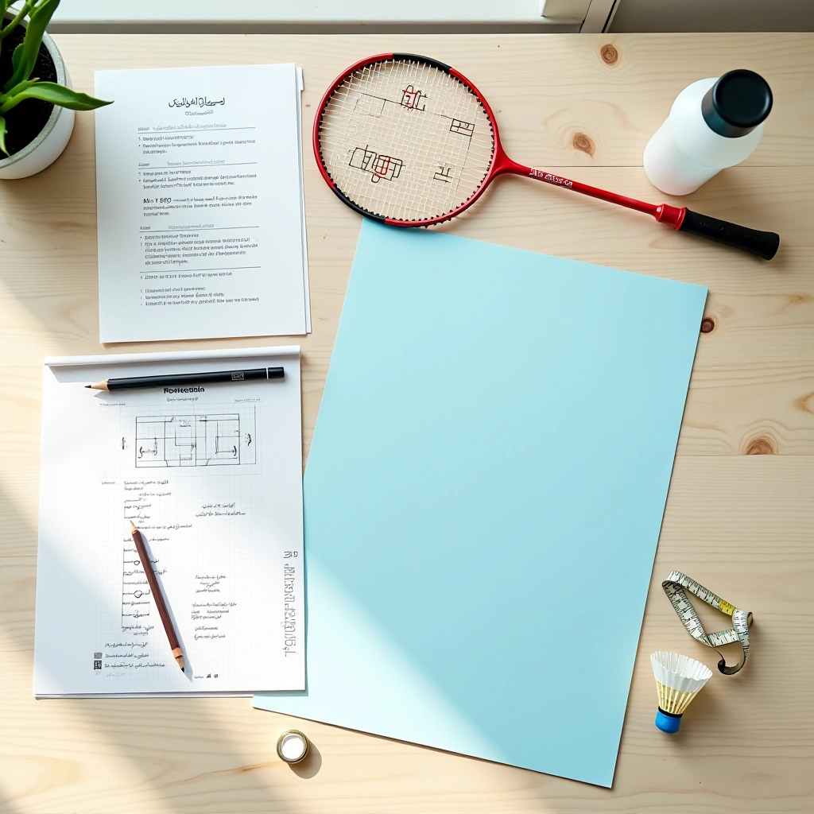
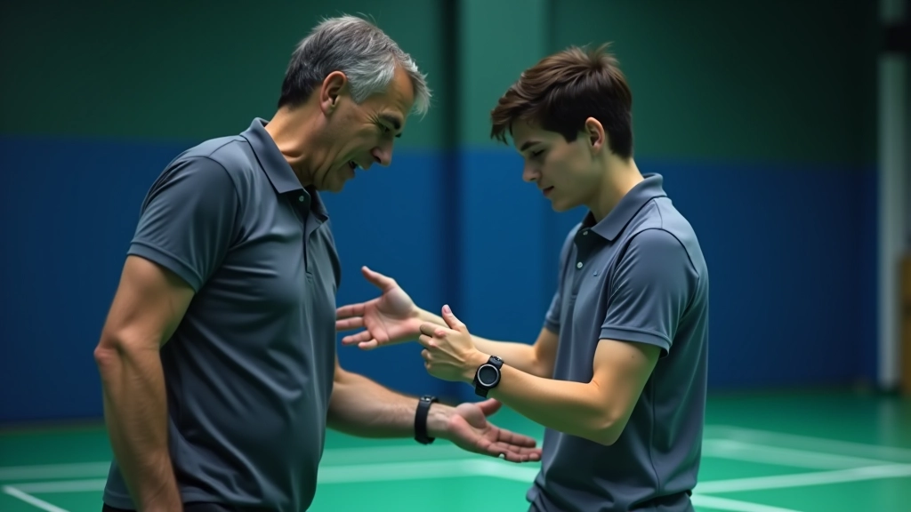
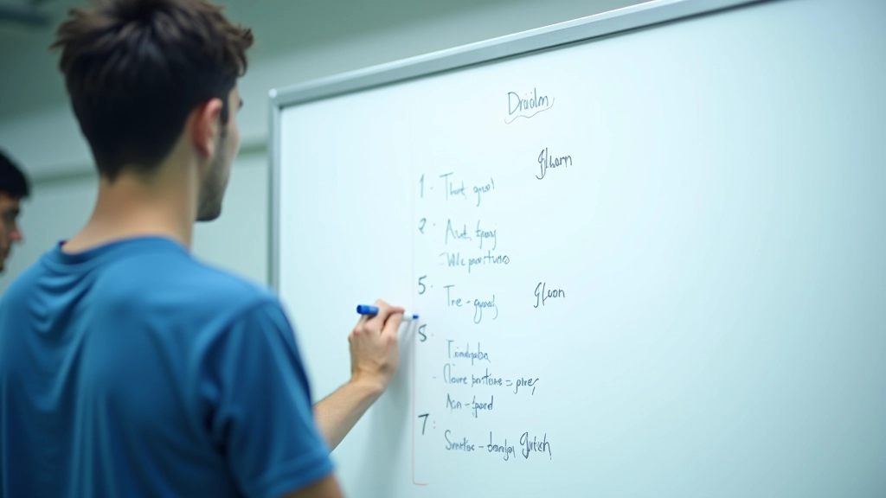
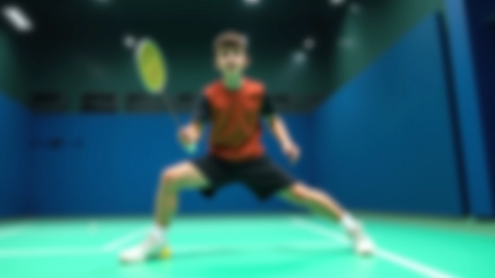

البدء بتمارين السلم الأساسية
تعرف على الخطوات الأولى الصحيحة لتمارين سلم السرعة. تشرح هذه المقالة أنماط الحركة الثلاث الأساسية وكيفية تنفيذها بدقة.
اقرأ المقالة
خطة عملية وفعّالة لتطبيق تمارين السلم بشكل منتظم. يتضمن جدول زمني واضح مع نصائح لتجنب الإصابات والحصول على أفضل النتائج في أقصر وقت.

كتبه
فريق التحرير والمحتوى
كتبه فريق حركة الريشة التحريري، مختص بتقديم إرشادات عملية وسهلة التطبيق في مجال تدريب الريشة الطائرة.
التدريب العشوائي لن يأخذك بعيداً. نحن نفهم أن كل لاعب مشغول — يريد نتائج حقيقية دون إهدار الوقت. برنامج التمرين الأسبوعي المنظم هو ما تحتاج إليه. يوفر هيكل واضح، تقدم منطقي، وأمان من الإصابات.
هذا البرنامج مصمم بناءً على سنوات من التدريب الفعلي. ليس نظرياً فقط — إنه مختبر ومثبت مع عشرات اللاعبين. ستتعلم كيفية توزيع التمارين عبر الأسبوع، كم مرة تدرب، وكيف تراقب تقدمك دون الإصابة.

تبدأ الأسبوع بتمارين سلم أساسية. الأحد والثلاثاء والخميس — يومين تمرين مع يوم راحة بينهما. كل جلسة تركز على نمط حركة واحد أساسي. الاثنين بالتمرين الأفقي (Side-to-Side)، الأربعاء بالتمرين الأمامي الخلفي (Forward-Backward)، الجمعة بتمرين مزدوج القدمين (Double-Foot).
السبت يوم راحة تام أو تمرين خفيف جداً. لا تجلس فقط — مارس تمارين استطالة (Stretching) والاسترخاء العضلي. هذا يسرع التعافي ويقلل من آلام العضلات اليوم التالي. تستطيع المشي الخفيف أو السباحة لمدة 20 دقيقة إذا أردت.
كل أسبوع تضيف شيء جديد. في الأسبوع الأول تركض بسرعة متوسطة. في الثاني تزيد السرعة قليلاً. في الثالث تضيف حركات إضافية. لا تسرع التقدم — يأخذ 8-10 أسابيع لتشعر بفرق حقيقي في سرعة قدميك.
إليك كيف يبدو البرنامج بالضبط. نحن نقسم الأسبوع إلى 6 أيام تدريب و يوم راحة. كل جلسة تستغرق 30-40 دقيقة. لا نقول لك أن تقضي ساعتين في الصالة — ذلك غير واقعي. 30 دقيقة مركزة أفضل من ساعة ضائعة.
الاثنين: تمرين جانبي (Side-to-Side) — 5 مجموعات × 40 ثانية
الثلاثاء: راحة أو تمدد خفيف
الأربعاء: تمرين أمامي خلفي (Forward-Back) — 5 مجموعات × 40 ثانية
الخميس: راحة نشطة
الجمعة: تمرين مركب (ثلاث أنماط معاً) — 4 مجموعات × 45 ثانية
السبت والأحد: راحة كاملة أو تمارين استطالة فقط

أكبر خطأ يرتكبه المتدربون الجدد هو محاولة الركض بسرعة عالية من اليوم الأول. تؤدي السرعة الزائدة إلى أخطاء في الحركة وإصابات في الكاحل والركبة. ابدأ ببطء، ركز على الشكل الصحيح أولاً، ثم أضف السرعة.
لا تنسَ شرب الماء بين المجموعات. الجفاف يقلل الأداء بـ 20-30 بالمئة. احرص على شرب 250 مل من الماء بعد كل جلسة تمرين. قبل التمرين بـ 2-3 ساعات كل وجبة خفيفة تحتوي على كربوهيدرات وبروتين.
لا تستخدم حذاء قديماً أو مسطح. تحتاج إلى حذاء رياضي حقيقي مع دعم جيد للكاحل والقوس. الحذاء الجيد يقي من الإصابات ويحسن الأداء بـ 15 بالمئة. غيّر الحذاء كل 6-8 أشهر من الاستخدام المكثف.
ألم خفيف في العضلات طبيعي. لكن ألم حاد في المفصل أو الكاحل ليس طبيعياً. إذا شعرت بألم حاد خذ راحة يوم أو يومين. من الأفضل أن تأخذ راحة من التمرين الآن على أن تصاب بإصابة تبعدك أسابيع.
اكتب في دفتر صغير — كم مجموعة أكملت، كم سرعة، كيف شعرت. بعد 4 أسابيع ستفاجأ برؤية التحسن. هذا يعطيك دافعاً قوياً للاستمرار. أيضاً يساعدك في تجنب الأخطاء التي ارتكبتها من قبل.
معظم اللاعبين يتجاهلون النوم. العضلات لا تنمو في الصالة — تنمو وأنت نائم. 7-8 ساعات نوم ليلاً ضروري. بدون نوم كافي، لن ترى نتائج حتى لو مرنت بشكل مثالي.
الأسبوع الأول ستشعر بتعب في عضلات الساقين والقدمين. هذا طبيعي تماماً — العضلات تتأقلم. في الأسبوع الثاني يقل التعب قليلاً والحركة تصبح أسهل. في الأسبوع الثالث تبدأ تشعر بفرق حقيقي — قدماك أسرع، حركتك أكثر ثقة.
بعد شهر كامل من الالتزام، ستلاحظ تحسناً واضحاً. سرعة قدميك تحسنت، توازنك أفضل، وثقتك في الملعب أقوى. لن تصبح محترفاً في شهر — لكنك ستكون أفضل بكثير من حيث بدأت.
استجابة أسرع للحركة
توازن أفضل في تغيير الاتجاه
ثقة أكبر في الملعب
قدرة على اللعب بسرعة أعلى دون تعب

الآن أنت تعرف كيف يعمل البرنامج. البرنامج الأسبوعي المنظم ليس معقداً — هو منطقي وسهل التطبيق. الفكرة هي أن تلتزم. تمرين واحد مفقود هنا وهناك لن يؤثر. لكن الالتزام الحقيقي عبر 8-10 أسابيع — ذلك يغيّر كل شيء.
ابدأ هذا الأسبوع. اختر ثلاثة أيام للتمرين. اتبع الجدول بالضبط. سجل تقدمك. بعد شهر ستشعر بالفرق. بعد شهرين ستكون لاعباً مختلفاً — أسرع، أقوى، وأكثر ثقة. هذا ما يقدمه برنامج تمرين منظم حقاً.
المعلومات الواردة في هذا المقال هي لأغراض تعليمية وإعلامية فقط. ليست بديلاً عن استشارة مدرب محترف أو متخصص طبي. قبل البدء بأي برنامج تدريبي جديد، يفضل استشارة مدرب أو طبيب متخصص في الرياضة، خاصة إذا كان لديك أي حالات صحية موجودة مسبقاً. كل شخص مختلف، والبرنامج قد يحتاج تعديلات حسب احتياجاتك الشخصية وقدراتك البدنية.